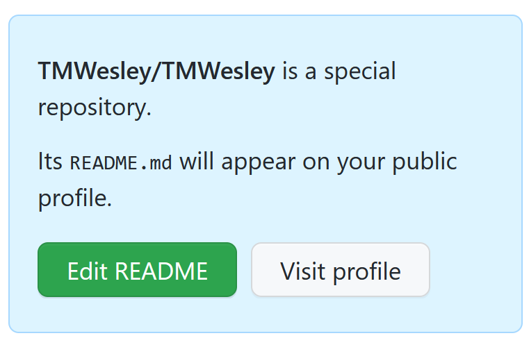

Create your GitHub profile README
Tutorial

Adding a README to your GitHub profile is a great way to tell the world about yourself and get experience using GitHub! Before you get started, you’ll need to create a GitHub account. Follow the wikiHow instructions here to sign up.
Create your README
In the right-hand corner of the black header bar, select the down arrow to the right of the + symbol. Select New repository from the drop-down menu. In the Repository name field, enter your username (your repository name must match your username in order for your README to appear in your profile). You can add an optional description to your repository. Try adding “My profile repository”. Leave the default Public setting selected (this is required for the README to appear in your profile). Check the box next to Add a README file. Scroll to the bottom of the page and select the green Create repository button. Congratulations, you’ve just added a README to your profile!Personalize your README
Your README is in your profile, but you still need to add your own content! Select the green **Edit README** button in the light blue sidebar.  On the Edit file tab, delete the boilerplate text and type “### Hello world!” on line 1. Use the Preview tab to see how the formatting will look to the audience.
Commit your README
When you are done editing your README, scroll to the Commit changes section at the bottom of the page. Leave Commit directly to the [current] branch selected and select the green Commit changes button.
View your README in your profile
Congratulations, your README is now in your profile! But you’ve yet to admire your work. To see your README in your profile, select the down arrow to the right of your profile picture and select Your profile from the drop-down menu. You will now see your README in your profile. Nice work!